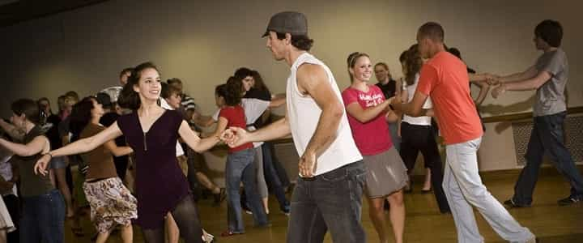

Leo is a scientist who is interested in the mechanisms of society at large. Studying these has lead him on a path to improve his life with tried and trusted methods, and to share those with others.


When I started college, I was a nerdy physics major who did not have a lot of experience with women. I used my college’s Ballroom and Latin dancing society to change that. Over the course of a few years, I went from near invisible to being one of the most popular guys in the society.
If you are a guy who was similar to me heading off to college or living in a city with some decent dance classes, you too can use the dance classes to get good with women. If you’re already a stud, consider doing it to increase your options. No matter what level you start at, there are several benefits to attending these classes. Let’s review three of them.

The most obvious benefit is that women will outnumber men by two to one or even three to one. You will get a chance to dance with most of them, in close proximity, holding each other. For a guy without much experience with women this can be a great help. Just don’t be what some of the girls referred to as an “awkward sweaty palmed boy.” That won’t help matters.
In most beginner classes you will dance with one partner, then when the song is over you’ll swap on to the next girl. This is a great way to meet a lot of girls in a short time. I’d suggest not starting off with spitting game and trying to pick up chicks. When you dance with a girl, talk with her at first and get to know her. When the song is over, move on to the next one.
You’ll start finding ones that you like. Speak to them after the lesson or arrive to the next lesson ten minutes early and start chatting them up then. You’re going to see most of these girls every week for the next year or more. So treat it as any other social scene you would be part of. Opportunities will come about if you keep putting yourself out there.
The second major benefit is learning how to lead. Leading a woman in dancing is an encapsulation of the masculine/feminine dynamic, for in all dancing the man leads and the woman follows. Most men get this wrong and think it is about pushing and pulling their partner around the dance floor.
Instead, proper leading in dancing is an assertive act, not a forceful act. It is done through displaying power and strength in your body language and posture, by taking all of your steps with purpose and intent. It is a subtle thing that is communicated through your hands and balance. When done correctly, your partner moves with you as she will find it irresistible not to, and she will be happy to do it.
The best example of proper leading that I have come across is this:
The benefits of this cannot be overstated. You will find yourself leading women as you go about your daily life, when you are in conversation with a girl, when you are in bed with her. You will feel how she moves and responds to you and you will adjust accordingly.
The last major benefit you will get is developing a sense of mastery and skill. Jack Donovan in The Way of Men states that mastery is one of the foundational pillars of masculinity. If you practice at dancing for a year or two with intent you will start to develop some serious skill at it. And once you start getting to a point where you are better than most of the other guys there, you will have attained a level of perceived mastery.
Yes, there will be dancers out there who will always be better than you, but are they at your club, to the girls that are available to you right then and there? You will be the master. And your options will be correspondingly great. All the girls will want to dance with you. Some of the girls will be interested in you.
I know this from my experience. When I started dancing none of the girls paid any attention to me. After one and a half years of diligent practice and getting a spot on the podium at the yearly Inter-Collegiate competition, suddenly my star went up.
At lessons, whenever one song ended and it was time to switch partners I would have several girls running at me in their high heels and skidding to a stop so that they could partner me for the next dance. This never failed to amuse me. At socials I was kept on my feet by all the women that wanted to dance with me. This was a sharp contrast to the times before winning the medal and displaying skill, where I only got a dance if I asked a girl.
Besides the women, there was the sheer joy of working hard at something over a period of time in order to get better at it. I’ll be honest, I joined the dancing society because I wanted a way to meet lots of girls and get better with them. But I stayed for the dancing. All of these benefits that I had with women became secondary concerns. They happened after I put in the required effort.
But it paid off. I went from relative unknown to one of the more popular guys in the society, more popular than I had ever been in my life before. I could get girls worked up in some of the sexier dances. There is a saying that dancing is a perpendicular expression of a horizontal desire, and this was proved true to me time and time again.
After some steamy, sexy sessions in either Argentine Tango or Cha-Cha, my partners would be flushed, with heaving breaths, looking exactly as if we had just done a horizontal act instead of a vertical one. It’s an intoxicating feeling, doing that to a girl in public.
If you give this a try and put in the effort for a year or two, you too will reap similar benefits. It’s a great feeling having a pretty girl compete with the others to dance with you, give you a wink as you start, and become increasingly turned on as you spin her around. Keep your head about you, and the chances of you expressing this act on a deeper level are a lot higher.